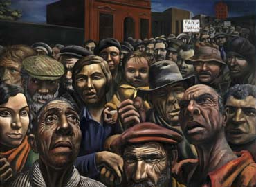

Basada en la obra de Antonio Berni, Manifestación (1934), la obra rescata la tensión producida por el conjunto de personas en la perspectiva, a través de la profundidad.
Antonio Berni nació en Rosario en 1905 y murió en Buenos Aires en 1981. Durante sesenta años se dedicó a la pintura convirtiéndose en uno de los artistas más importantes de la Argentina y de América latina. Fue pintor, grabador, dibujante, muralista, ilustrador, realizó objetos e instalaciones. Conoce una de las vanguardias artísticas más importantes de aquel momento: el surrealismo, y adhiere durante algunos años a sus postulados. En el óleo de Berni "La puerta abierta", el muro, la puerta, la llave y el alfiler de ganchos gigantescos, los cubos de colores, la cerradura fuera de lugar, el timbre y la letra "T".

 Qbita
Qbita